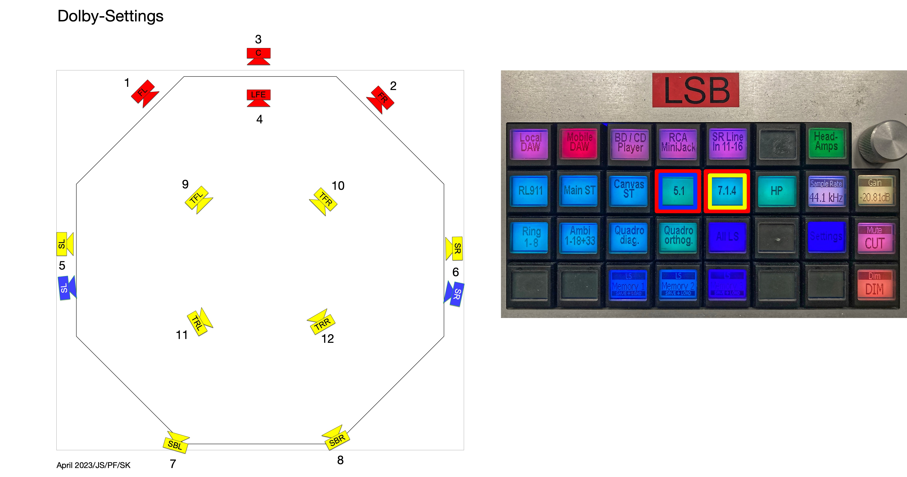
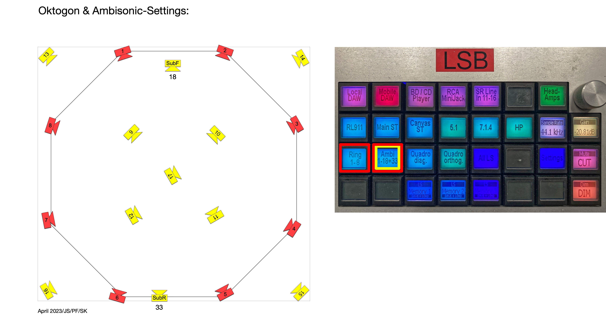
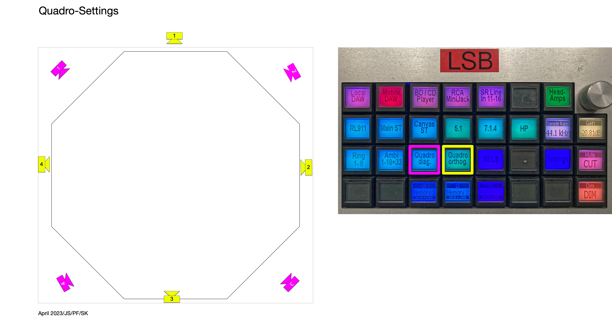

ICST Labor Ambisonics Speaker Settings
Institute for Computer Music and Sound Technology / (ICST) Zurich University of the Arts
Stereo-Setting:

- Yellow = RL911
- Gray = MO-2
- Red = MO-2 (Behind the screen)
Dolby Surround

- 5.1 Surround
- 7.1.4 Atmos
Octogon & Ambisonics

- Ring 1-8 (clockwise) & Ambisonics (2D)
- Ambisonics Full (17 speakers)
Quadrophonie

- Quadro (diagonal)
- Quadro (orthogonal)
All speakers
 All speakers allow the creation of your own speaker routings.
All speakers allow the creation of your own speaker routings.
©2025 ICST